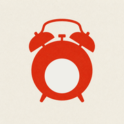
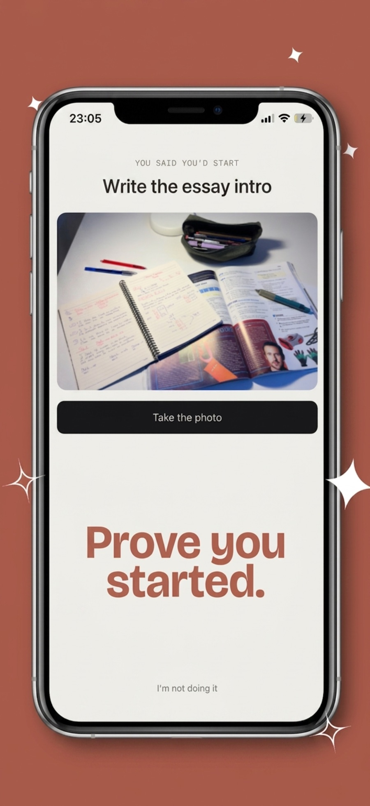
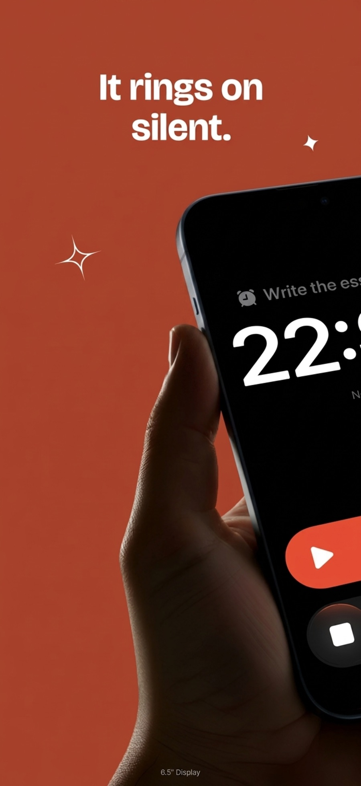
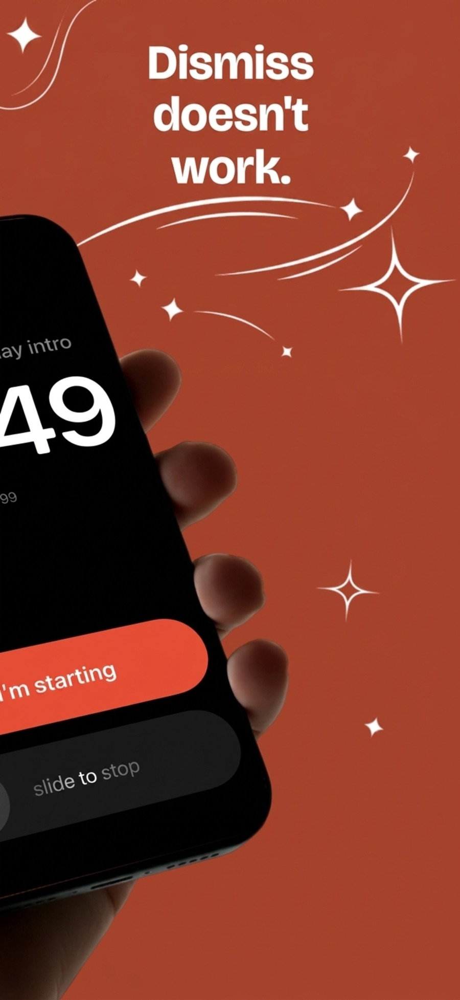
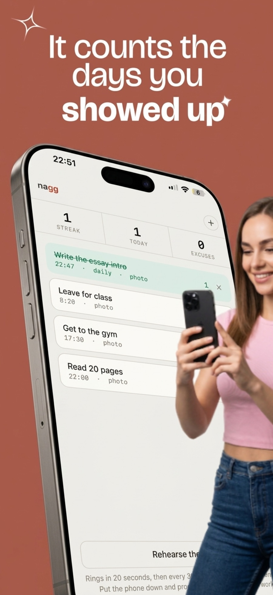
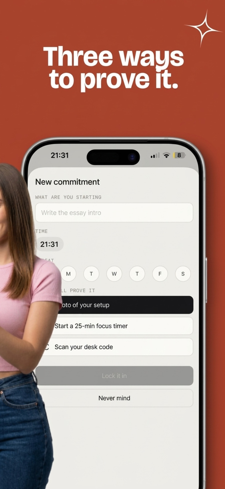

iPhone & iPad · iOS 26 · Free
Nagg comes to find you. Tell it what you keep putting off and when you will start. At that time it rings — through Silent, through Focus, through Do Not Disturb. Dismissing it does not work: it comes back, up to five times.

The mechanism
The alarm has no snooze and no dismiss that sticks. The only thing that silences it is evidence. You pick which kind, per commitment.
Your laptop open, your notebook out — whatever starting looks like. Checked on the device and discarded immediately.
Start it and stay. The alarm stays quiet exactly as long as the timer does.
Print the QR, tape it to the desk you are supposed to be at, and walk over. The hardest one to fake from bed.
Afterwards
A streak that only grows on days you actually began — not days you opened the app, not days you meant to. And an excuse count sitting right next to it, for every alarm you let run out. It is an uncomfortable number by design.




Why it can ring when everything else stays quiet. Nagg is built on AlarmKit, the same system behind Apple's own Clock app. That is what lets it through Silent, Focus and Do Not Disturb — and it is why iOS 26 is required.
No account, no sign-up, no server. Your commitments, streaks and proof photos never leave your phone. There is nothing for us to lose.
iPhone & iPad — requires iOS 26 or later